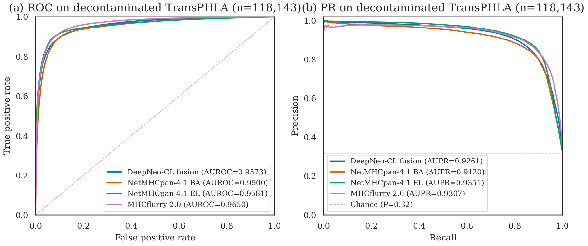
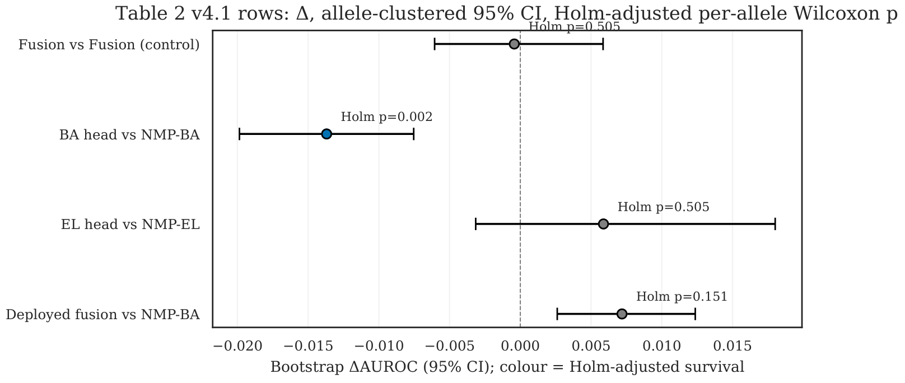

A Compact Protein Language Model
for Peptide–MHC Class I Ranking
A leakage-aware evaluation protocol under multiplicity control
Kevin Wang · Parma Nand
School of Design and Creative Technologies · Auckland University of Technology
github.com/KevinSimple/deepneo-pub
Given an HLA allele (context key), rank 10²–10&sup4; candidate peptides by binding likelihood. This is a ranking problem with ~13,000 known allele variants.
Ranking under a context key — score many short candidates for one fixed conditioner.
| Biology | ML equivalent |
|---|---|
| HLA allele | Context key (conditioner) |
| Peptide (8–11 aa) | Candidate input |
| Binding affinity | Positive-class score |
| ~13K allele variants | Conditional distributions |
Pipeline: training corpora → model → decontamination firewall → independent benchmarks → statistical protocol.
Total parameters
35 M
ESM2-35M · 12 layers, d=480Source: ablation_ladder.json · TransPHLA EL, full 161,652-row benchmark.
NetMHCpan’s training corpus (~160K peptide–HLA pairs) overlaps with most public benchmarks. Without removal, test-set gains reflect memorisation, not generalisation.
Kapoor & Narayanan 2023 · Bernett et al. 2024
Benchmarks score across dozens of HLA alleles, each treated as independent. With 100 alleles at α=0.05, ~5 chance “wins” appear by noise alone.
FWER correction (Holm 1979) widely ignored in this literature.
Contamination ledger: TransPHLA shares 26.9% with NMP-4.1 corpus; IEDB auto_bench 15–22%.
A signed Δ (DeepNeo − baseline) is reported as a real win only if all three conditions hold:
Every evaluation row also in NetMHCpan-4.1’s training-pair union is removed before scoring. On TransPHLA: 43,509 of 161,652 rows removed (26.9%) → 118,143 clean rows.
Think of this as a three-gate CI pipeline for model comparisons: gate 1 (DeLong) catches point-estimate noise, gate 2 (Holm) catches allele-level multiplicity, gate 3 (bootstrap CI) catches sample-dependence. A “win” passes all three gates or gets rejected.
At the deployed fusion level: DeepNeo-CL matches NetMHCpan-4.1 — AUROC 0.9573 vs 0.9575 (TIED)
| Comparison | Δ AUROC | Verdict |
|---|---|---|
| Fusion vs Fusion | −0.0002 | TIED |
| BA vs BA | −0.0137 | NMP wins |
| EL vs EL | +0.0059 | Holm-tied |
The only Holm-robust asymmetry is NetMHCpan’s BA-head advantage.

Source: Table 1 + Holm/bootstrap SI ledgers
auto_bench weekly — 46 human-allele weeks (2020–2026)Mean rank 6.85 / 14 — mid-field
Leaders: NMP-4.0 (4.98) · NMP-4.1 (5.14)
Head-to-head: DeepNeo wins 13 · Tie 5 · NMP wins 28
Mean rank 1.80 vs NMP-4.1 at 2.01
Rank-1 in 24 / 46 weeks (19 outright)
Source: weekly_ranking_v41_2020_2026_singlecol_v2.json
Δ AUROC = −0.0137 — NMP higher
Holm-adjusted p = 1.7 × 10&supmin;³ · Bootstrap CI excludes zero
All three conditions met → Holm-robust NMP win
Without Holm adjustment, the fusion’s pooled edge (+0.0073) can be reported as a win. Under the three-condition rule it is not Holm-robust (Holm p = 0.151).

Forest plot: only BA-head excludes zero after Holm correction.
We fit a second-stage pocket rescorer by 5-fold CV on the evaluation benchmark itself.
Fitting an inference-time head on the evaluation set itself is leakage that ordinary train/test hygiene does not catch. The gain is in-sample; the collapse is consistent with evaluation-set fitting, not transferable discrimination.
Component withdrawn and reported as a documented negative.
| Channel | Base | Trans. | Induc. |
|---|---|---|---|
| IEDB BA | 0.828 | 0.862 | 0.442 |
| TransPHLA BA | 0.955 | 0.977 | 0.871 |
| TransPHLA EL | 0.970 | 0.978 | 0.889 |
Same pattern across all 3 channels: transductive inflates, inductive collapses.
Source: inductive_reranker_result.json · See also Kapoor 2023, Rosenblatt 2024, Bernett 2024, Joeres 2025.
A compact 35M-parameter PLM for peptide–MHC class I ranking, trained on the official NetMHCpan-4.1 folds.
A leakage-aware, multiplicity-controlled evaluation contract, applied verbatim in Results and linked to the methodology literature.
Two evaluation-failure case studies on our own data: a successor-corpus holdout overlap and a transductive-overfitting rescorer collapse.
Class I MHC · canonical 8–11-mer peptides · no clinical, Class II, PTM, or TCR-specificity claim.
Efficient Protein Language Models for Peptide–MHC Ranking: A Leakage-Aware Evaluation Protocol under Multiplicity Control
MDPI Information · Special Issue: Emerging Trends in Machine Learning & NLP
Under review · October 2026
github.com/KevinSimple/deepneo-pub
compliance/ — two formal compliance reports
evidence/ — 515-claim SI JSON ledgers
reviews/ — pre-submission panel reviews
Kevin Wang · Parma Nand
Auckland University of Technology
Thanks for watching.
→ Space PgDnNext slide
← PgUpPrevious slide
Home / EndFirst / Last
FToggle fullscreen
RRestart
?Toggle help
Swipe ←→Prev / Next (touch)
Press any key or tap to close